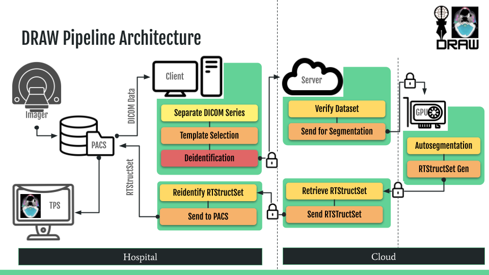

DRAW Architecture
The following diagram shows the architecture of the DRAW application.
{kind=link}
As shown there are three main components:
The DRAW client application
The DRAW API server
The GPU machine
The DRAW client application is a Django based web application. In additon to Django it uses:
PostgreSQL for storing the data
Celery for running the background tasks
Celery beat for scheduling the tasks
RabbitMQ as the message broker for Celery
Gunicorn for running the Django application
Nginx for running the web server and serving static files
The DRAW API server is also a Django application hosted in the cloud. It powers the DRAW website which can be accessed at - https://draw.chavi.API. It allows us to define new models and stores the model related data in a central object store. Additionally it also enables us to mark specific models as active so that they can be used by the clients. The server also handles the file upload and processing for the clients.
The GPU machine is an ephemeral machine which is created to create the segmentation. By dividing up the architecture we can create multiple GPU machines to speed up the segmentation process. Additionally the architecture is independant of the autosegmentation algorithm / method actually used at the GPU server ensuring that the Client and API server can be used even if the method for automatic segmentation is changed.
After the automatic segmentation is complete, the GPU machine is deleted. This ensures that we do not have any charges for the GPU machine after it has completed its task. The RTStruct is retrieved and sent back to the client. The server will delete the RTStructure and the DICOM images after they have been sent to the client.